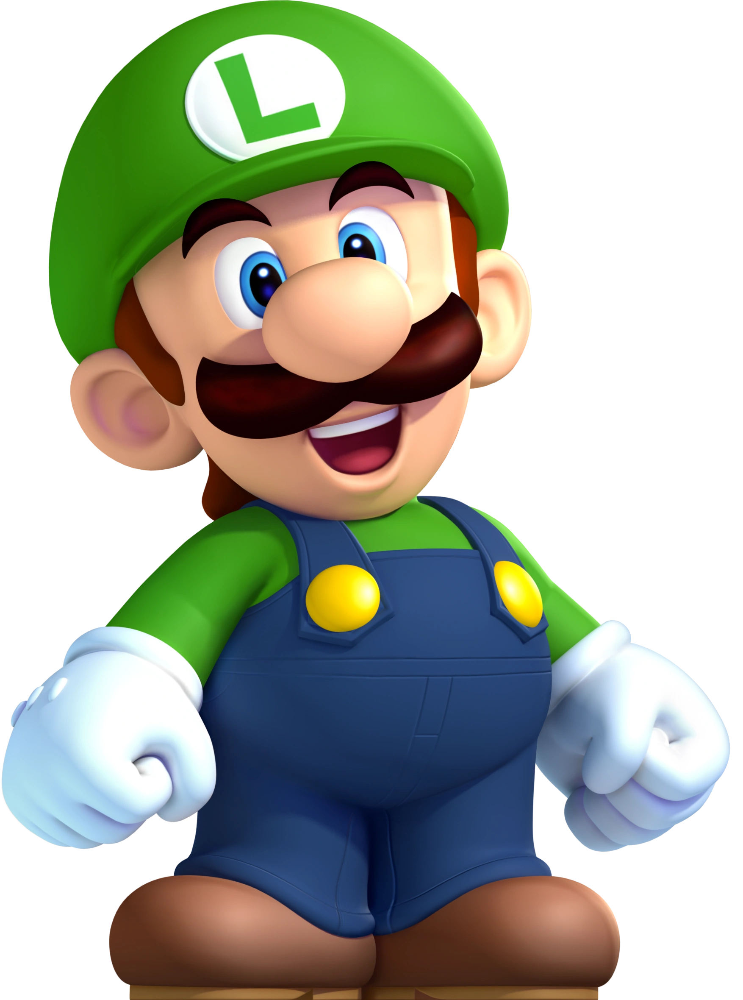

Luigi (ルイージ Ruīji?) é um personagem fictício de videogames produzido pela Nintendo. Criado pelo designer de jogos Shigeru Miyamoto, Luigi é irmão do Mario e é um dos mascotes da série, ele é o seu companheiro em vários jogos. A primeira aparição de Luigi se deu no jogo Mario Bros. em 1983, como personagem controlado pelo segundo jogador. Ele manteve esse papel em Super Mario Bros., Super Mario Bros. 3, Super Mario World e outros títulos. O primeiro jogo em que estrelou como personagem primário foi Super Mario Bros. 2. Luigi protagonizou o jogo educativo Mario is Missing!, e mais tarde repetiu o papel em Luigi's Mansion, jogo lançado para o Gamecube em 2001. Nos dois jogos, é colocado no papel de herói porque Mario, o protagonista normal da franquia, precisa ser salvo.[1] No jogo Super Mario RPG descobre-se que o maior sonho de Luigi é se tornar um encanador tão bom quanto seu irmão.


Luigi Bros
